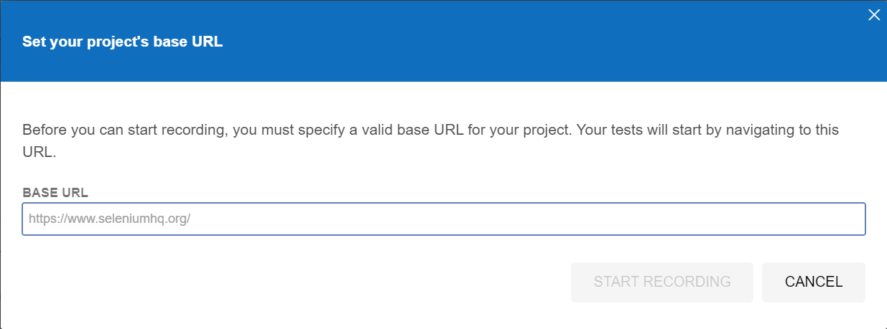
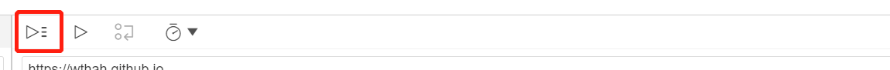
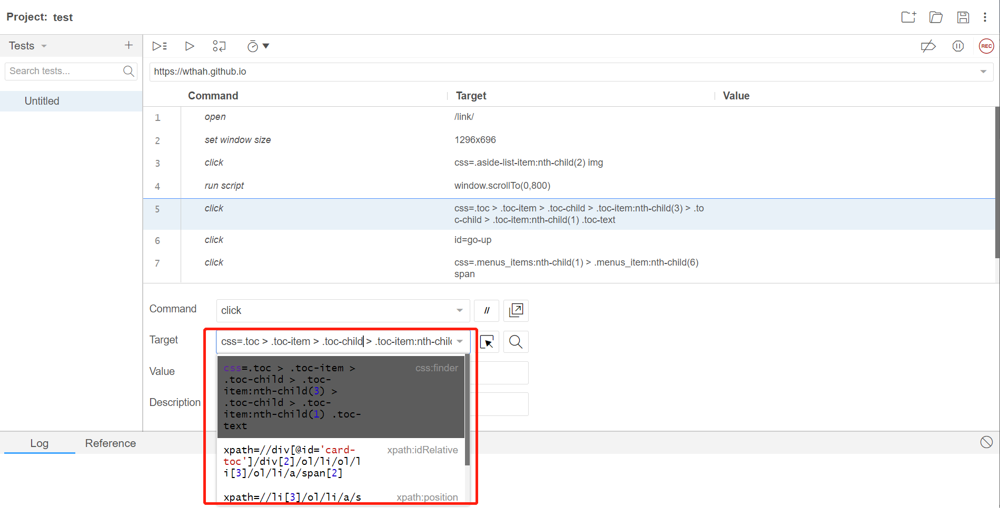
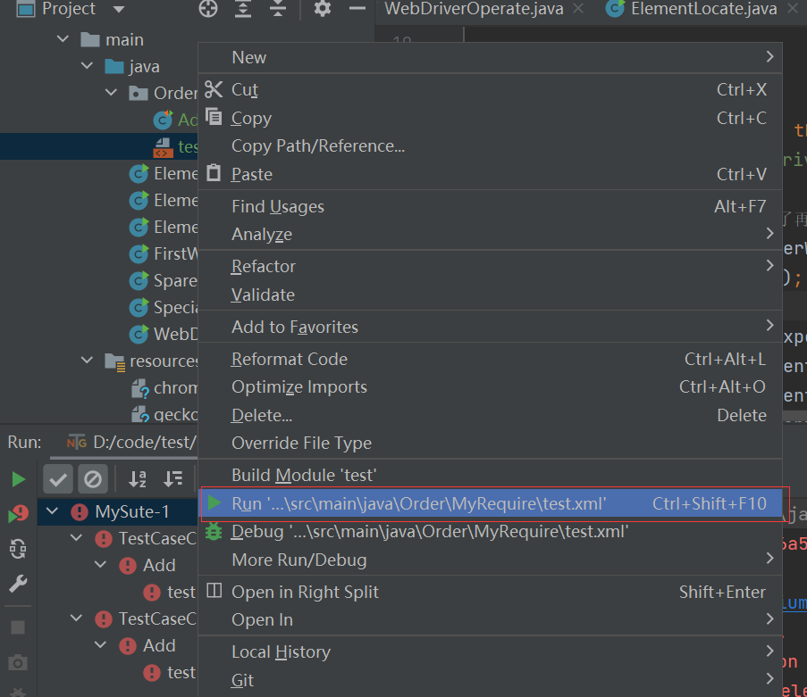

Selenium
1. 使用步骤
Selenium IDE 安装及使用
可以不用写脚本，用来录制测试人员在网页的操作，然后保存操作，最后重新测试的时候可以重新执行测试。

录制

执行

保存


Selenium WebServer安装及使用
maven
<dependency> <groupId>org.seleniumhq.selenium</groupId> <artifactId>selenium-java</artifactId> <version>3.141.59</version></dependency>元素操作
- clear（）
- click（）
- sendKeys（）
x
// 连接火狐public static void openFirefox(){ // 设置火狐浏览器exe位置 System.setProperty("webdriver.firefox.bin","D:\\soft\\FireFox\\firefox.exe"); // 下载火狐浏览器驱动geckodriver保证火狐能够看得懂我们的代码 System.setProperty("webdriver.gecko.driver","src/main/resources/geckodriver.exe"); FirefoxDriver firefoxDriver = new FirefoxDriver(); firefoxDriver.get("https://wthah.github.io/link/");}// 连接谷歌public static void openChrome(){ // 下载谷歌驱动 System.setProperty("webdriver.chrome.driver","src/main/resources/chromedriver.exe"); // 1. 打开浏览器 ChromeDriver chromeDriver = new ChromeDriver(); // 2. 访问网站 chromeDriver.get("https://wthah.github.io/link/");}
public static void main(String[] args) throws InterruptedException { openChrome(); // 填写输入框 chromeDriver.findElement(By.id("kw")).sendKeys("1234"); // 强制睡眠3s Thread.sleep(3000); // 清空输入框 chromeDriver.findElement(By.id("kw")).clear(); // 定位kw输入框 WebElement webElement = chromeDriver.findElement(By.id("kw")); // getTagName System.out.println(webElement.getTagName()); // getAttribute System.out.println(webElement.getAttribute("maxlength")); // getText System.out.println(webElement.getText()); // isDisplayed System.out.println(webElement.getText());}元素定位
xxxxxxxxxxpublic static void main(String[] args) { openChrome(); chromeDriver.findElement(By.id("kw")).sendKeys("Megumi"); chromeDriver.findElement(By.id("su")).click(); // 定位name // 定位tagname // 定位classname // 定位LinkText chromeDriver.findElement(By.linkText("新闻")).click(); // 定位patialLinkText chromeDriver.findElement(By.partialLinkText("新")).click(); // css元素定位（略写） // xpath元素定位 }
快速获取xpath和css方法：
xpath手写：https://blog.csdn.net/weixin_49981930/article/details/123093827?ops_request_misc=%257B%2522request%255Fid%2522%253A%2522165326893816780357228898%2522%252C%2522scm%2522%253A%252220140713.130102334..%2522%257D&request_id=165326893816780357228898&biz_id=0&utm_medium=distribute.pc_search_result.none-task-blog-2~all~sobaiduend~default-2-123093827-null-null.142^v10^pc_search_result_control_group,157^v4^control&utm_term=selenium+xpath%E5%AE%9A%E4%BD%8D&spm=1018.2226.3001.4187

driver操作
xxxxxxxxxxpublic static void main(String[] args) throws InterruptedException { openChrome(); // url，title，退出页面 System.out.println(chromeDriver.getCurrentUrl()); System.out.println(chromeDriver.getTitle()); System.out.println(chromeDriver.getPageSource()); chromeDriver.quit(); chromeDriver.close(); // 句柄获得 chromeDriver.findElement(By.id("kw")).sendKeys("腾讯课堂"); chromeDriver.findElement(By.id("su")).click(); System.out.println("打开前的句柄"+chromeDriver.getWindowHandle()); Thread.sleep(1000); chromeDriver.findElement(By.linkText("官方")).click(); System.out.println("打开后的句柄"+chromeDriver.getWindowHandle());
// options菜单操作对象（屏幕大小控制） WebDriver.Options options = chromeDriver.manage(); options.window().fullscreen(); Dimension dimension = options.window().getSize(); System.out.println(dimension.getHeight()); System.out.println(dimension.getWidth()); System.out.println(options.window().getPosition().getX()); System.out.println(options.window().getPosition().getY());
// navigate（前进后退） WebDriver.Navigation navigation = chromeDriver.navigate(); Thread.sleep(1000); navigation.to("https://Wthah.github.io"); Thread.sleep(1000); navigation.refresh(); Thread.sleep(1000); navigation.back(); Thread.sleep(1000); navigation.forward();}三种等待方式
xxxxxxxxxxpublic static void main(String[] args) throws InterruptedException { openChrome(); // 隐式等待（所有操作都要等待固定时间） chromeDriver.manage().timeouts().implicitlyWait(5, TimeUnit.SECONDS); chromeDriver.get("https://baidu.com"); chromeDriver.findElement(By.id("kw")).sendKeys("腾讯课堂"); chromeDriver.findElement(By.id("su")).click(); // 硬性等待（单个操作强制等待） Thread.sleep(30000); chromeDriver.findElement(By.xpath("//a[text() = '-综合性在线终身学习平台']")).click();
//显示等待（等条件出现了在继续执行后续代码） WebDriverWait webDriverWait = new WebDriverWait(chromeDriver,5); webDriverWait.until(ExpectedConditions.visibilityOfElementLocated(By.xpath("//a[text() = '-综合性在线终身学习平台']")));
}特殊组件（并不完整）
xxxxxxxxxxpublic static void main(String[] args) throws InterruptedException { openChrome(); // alert // 找到alert Alert alert = chromeDriver.switchTo().alert(); alert.accept(); alert.dismiss(); System.out.println(alert.getText()); // confirm // 找到confirm chromeDriver.switchTo().alert(); alert.accept(); alert.dismiss(); alert.getText(); // iframe // 在默认页面输入数据 chromeDriver.findElement(By.id("aa")).sendKeys("aa");; chromeDriver.switchTo().frame("bframe"); chromeDriver.findElement(By.id("bb")).sendKeys("bb"); chromeDriver.switchTo().defaultContent(); //window切换 chromeDriver.findElement(By.id("aa")).sendKeys("a");
chromeDriver.findElement(By.id("b")).click();; // 句柄切换 // 切换到b之后获取所有窗口的句柄 Set<String> handles = chromeDriver.getWindowHandles(); for(String handle: handles){ chromeDriver.switchTo().window(handle); if(chromeDriver.getTitle().equals("***")){ break; } }
// select chromeDriver.findElement(By.className("setting-text")).click(); chromeDriver.findElement(By.xpath("//a[text()='高级搜索']")).click(); Thread.sleep(2000); WebElement webElement = chromeDriver.findElement(By.name("qpc")); Select select = new Select(webElement);
}Testng生成log
导入maven
xxxxxxxxxx<dependency> <groupId>org.testng</groupId> <artifactId>testng</artifactId> <version>6.14.3</version></dependency>
<dependency> <groupId>org.uncommons</groupId> <artifactId>reportng</artifactId> <version>1.1.4</version> <scope>test</scope></dependency><dependency> <groupId>com.google.inject</groupId> <artifactId>guice</artifactId> <version>4.0</version> <scope>test</scope></dependency>
导入插件
xxxxxxxxxx<plugins> <plugin> <groupId>org.apache.maven.plugins</groupId> <artifactId>maven-surefire-plugin</artifactId> <version>2.17</version> <configuration> <suiteXmlFiles> <suiteXmlFile>xmlfile/testng.xml</suiteXmlFile> </suiteXmlFiles> </configuration> </plugin> <plugin> <groupId>org.apache.maven.plugins</groupId> <artifactId>maven-surefire-plugin</artifactId> <version>2.19.1</version> <configuration> <properties> <property> <name>usedefaultlisteners</name> <value>false</value> </property> <property> <name>listener</name> <value>org.uncommons.reportng.HTMLReporter, org.uncommons.reportng.JUnitXMLReporter</value> </property> </properties> <workingDirectory>target/</workingDirectory> </configuration> </plugin></plugins>编写test.xml

添加日志

运行xml，查看输出

输出一般在项目根目录下的test-output中的html文件里边
index.html


testng的使用
这篇包含testng注释和使用全部测试和部分测试的xml如何编写
https://blog.csdn.net/weixin_39909877/article/details/108696188?ops_request_misc=%257B%2522request%255Fid%2522%253A%2522165327012316781483779829%2522%252C%2522scm%2522%253A%252220140713.130102334..%2522%257D&request_id=165327012316781483779829&biz_id=0&utm_medium=distribute.pc_search_result.none-task-blog-2~all~top_click~default-2-108696188-null-null.142^v10^pc_search_result_control_group,157^v4^control&utm_term=testng&spm=1018.2226.3001.4187